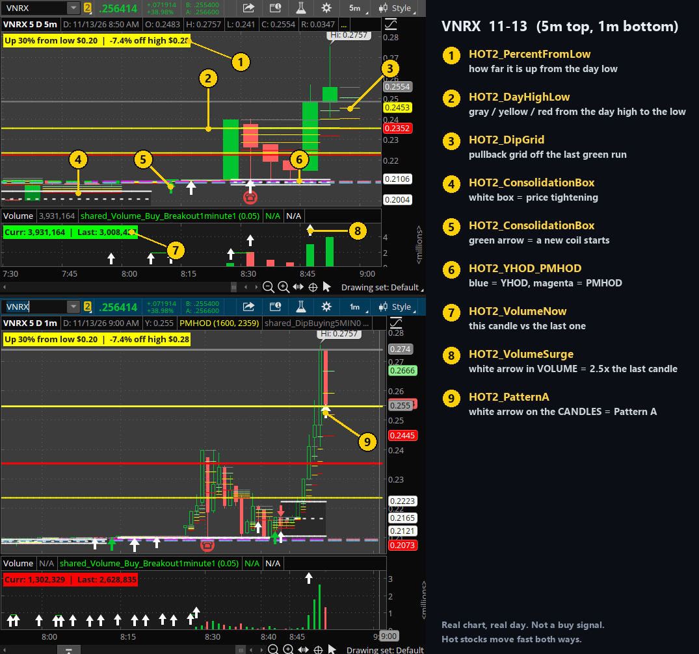
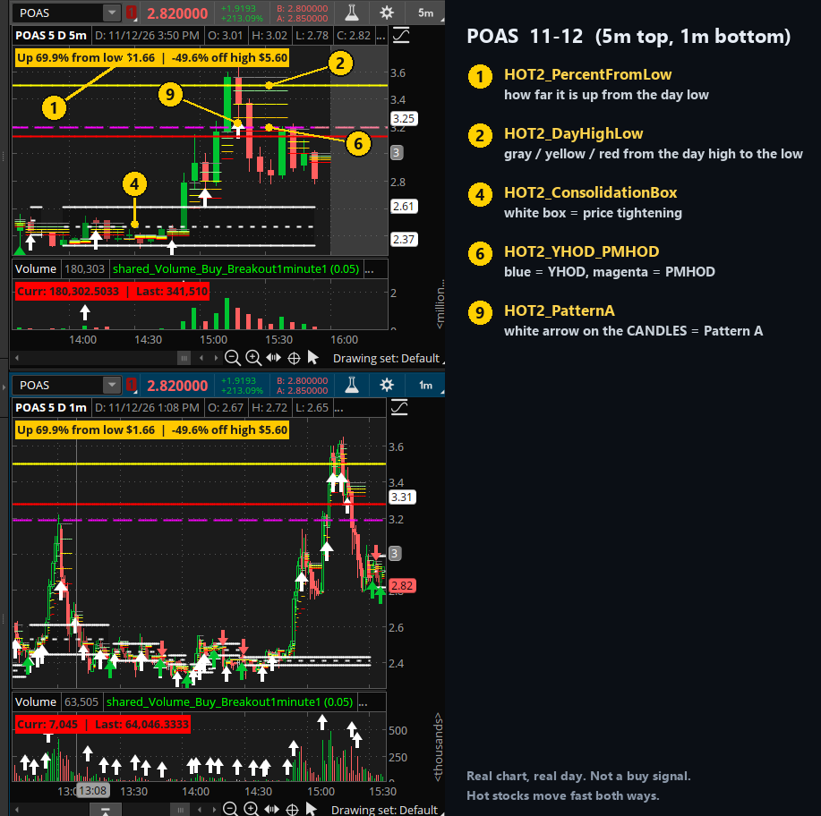
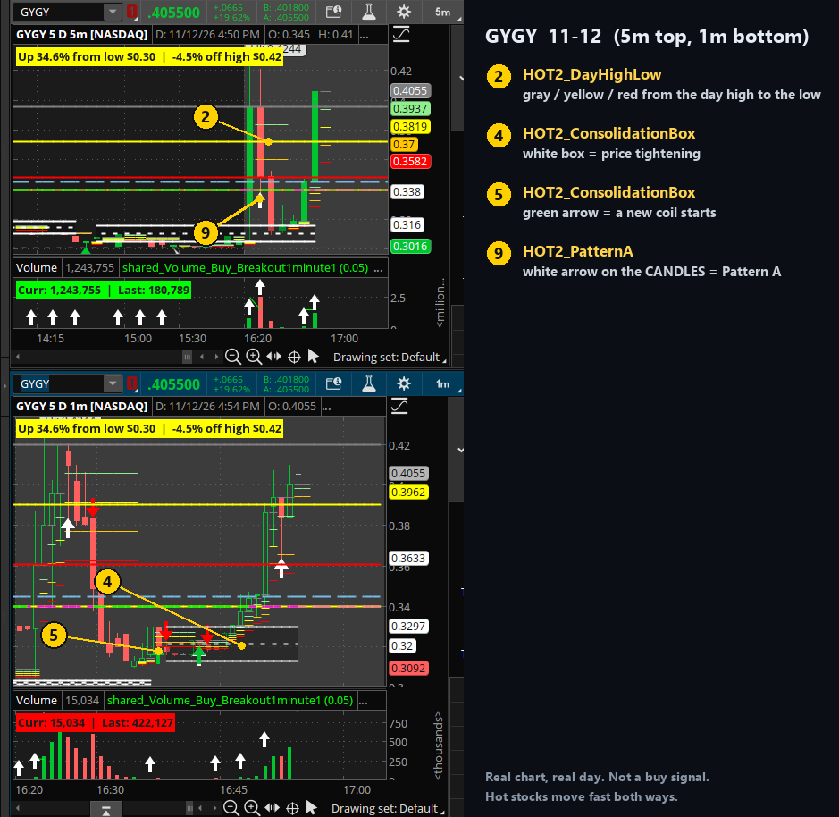
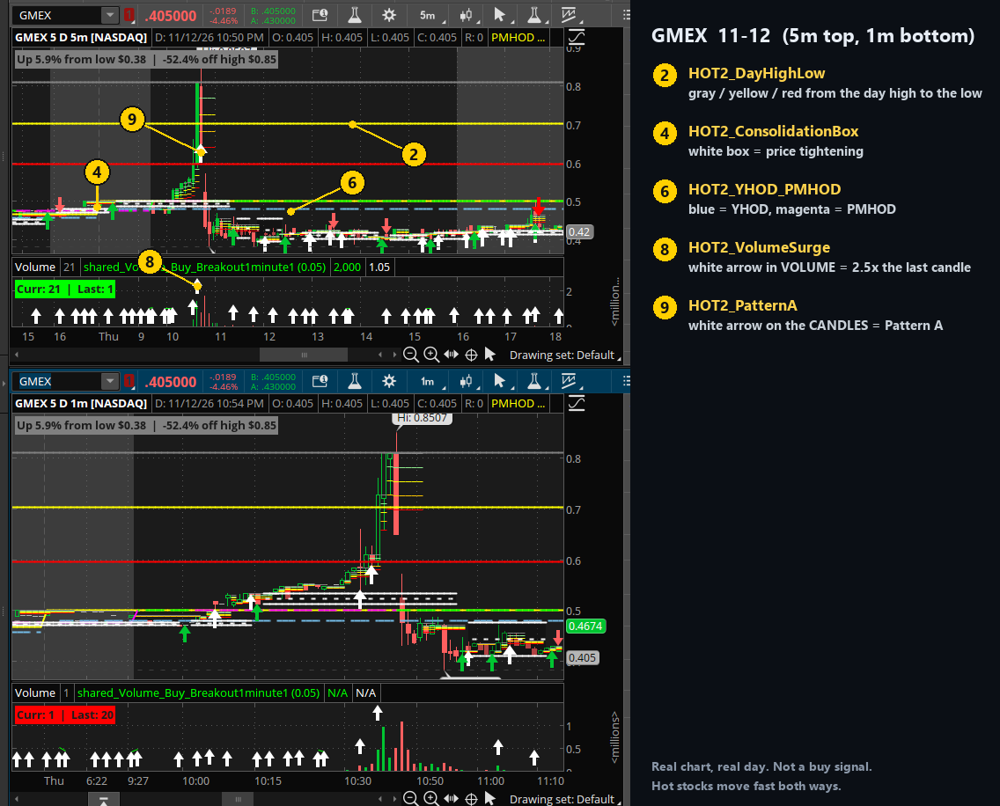

The HOT 2 Toolkit
Nine thinkorswim studies that draw the same lines the scanner watches: yesterday's high, the premarket high, the consolidation box, the pullback grid, Pattern A and the volume surge. When a stock lights up on HOT 2, you open the chart and see why.
Included with HOT 2 membership
Members get all 9 studies with one thinkorswim link, already set up to match the scanner, plus the live scanner, gold breaks, consolidation pushes and bells.
Become a member Already a member? Get your linkScanner + toolkit: made for each other
The scanner finds them
HOT 2 watches thousands of tickers from 4:00 AM and puts you on the stocks that are actually moving, the moment they break out on real volume.
The toolkit shows you why
Open the chart and the same lines are already there: YHOD, the premarket high, the box, the pullback grid, Pattern A and the volume surge. What the scanner saw, you see.
Use your own strategy
You don't have to trade our way. Even with your own setup, the scanner puts you on the hot stocks and the lines give you clean levels to plan around.
What's in it
Every setting is already done. Add the study, it looks like the pictures.
1HOT2_PercentFromLow
A label at the top: how far the stock is up from the day's low and down from its high. The color shows how stretched it is: gray, yellow, orange, red, magenta.
price chart2HOT2_DayHighLow
gray = top of the day, yellow = 25% back, red = halfway back to the day's low. Straight across the whole chart.
price chart3HOT2_DipGrid
A pullback grid off the last run of green candles: gray, light green, yellow, orange, red. Moves only when a green candle closes.
price chart45HOT2_ConsolidationBox
(4) A white box where price tightens and goes nowhere: solid top and bottom, dashed middle. (5) Green arrow = a new coil starts. Same box the scanner's 1M / 5M BOX tags talk about.
price chart6HOT2_YHOD_PMHOD
light blue = YHOD (yesterday's high), magenta = PMHOD (premarket high). The two lines HOT 2 alerts on.
price chart7HOT2_VolumeNow
"Curr | Last": this candle's volume against the one before, green when it's bigger. A bubble shows the % change.
volume pane8HOT2_VolumeSurge
White arrow in the volume pane = this candle traded 2.5x the volume of the one before. Rings an alert.
volume pane9HOT2_PatternA
White arrow on the candles = Pattern A: 2+ green candles, then a red candle that holds the halfway line of that run. Big arrow above the line (YHOD / premarket high), small arrow still under it. Shows when the red candle closes.
price chart10HOT2_AfterHoursHigh
yellow line = the high of the last after-hours session (4:00 PM to midnight). It stays on the chart through the next morning, where a stock that ran after hours often comes back to test it.
price chartOn real charts
Real days, real candles. The yellow numbers match the study list above. Click a picture to see it full size.




How to install
Easiest: the share link
- Open thinkorswim on your computer.
- Copy the share link from your members Toolkit page.
- In thinkorswim go to Setup → Open shared item, paste the link, click Preview, then Import. You get a chart with all 9 studies already set up.
- To use them on your other charts: Studies → Edit studies, find the HOT2 studies, Add selected.
Backup: paste the code
- In thinkorswim: Studies → Edit studies → Create.
- Delete what's in the box and paste the code from the study's .txt file.
- Name it (for example HOT2_DayHighLow) and click OK.
- Add it to your chart. Don't change any settings, they're already done.